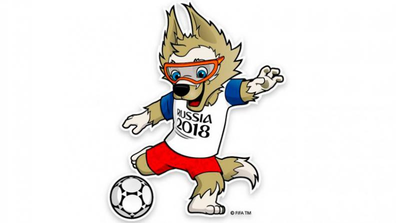
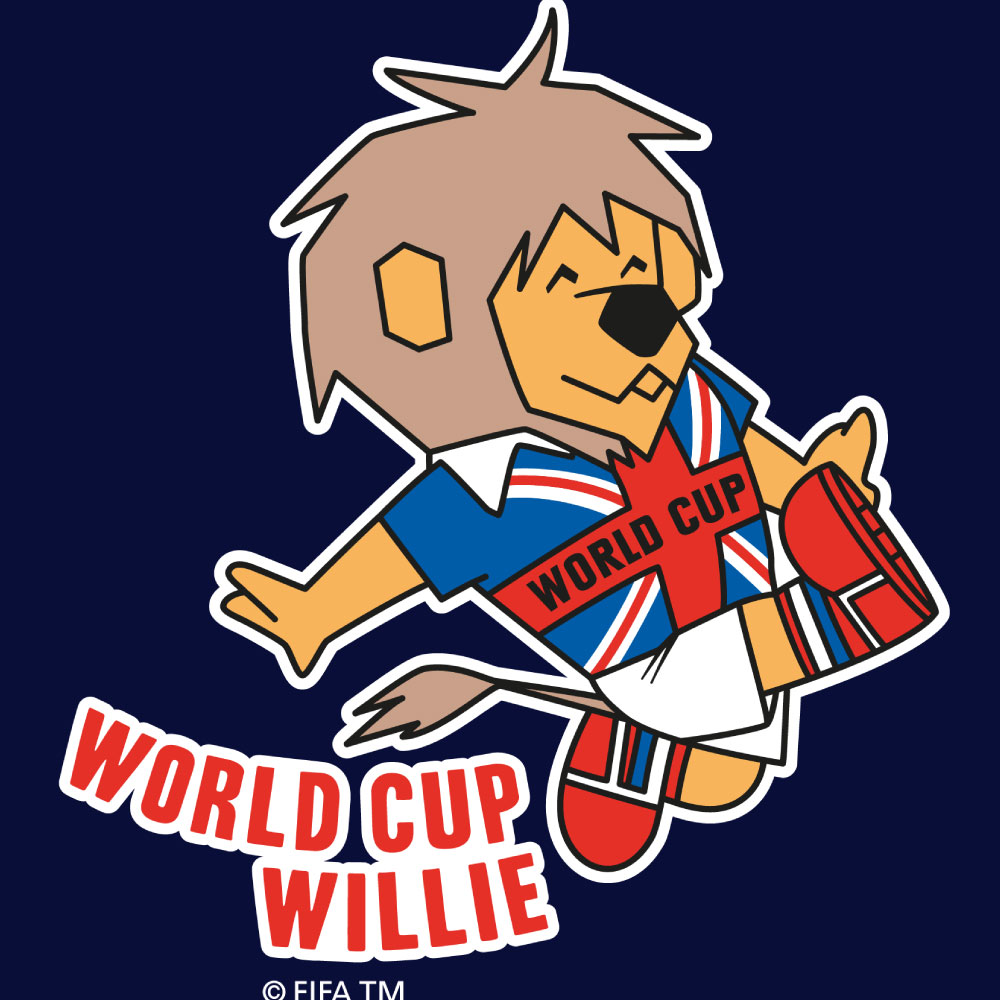
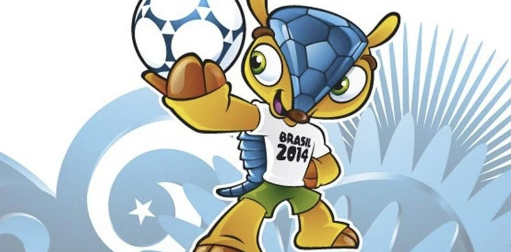
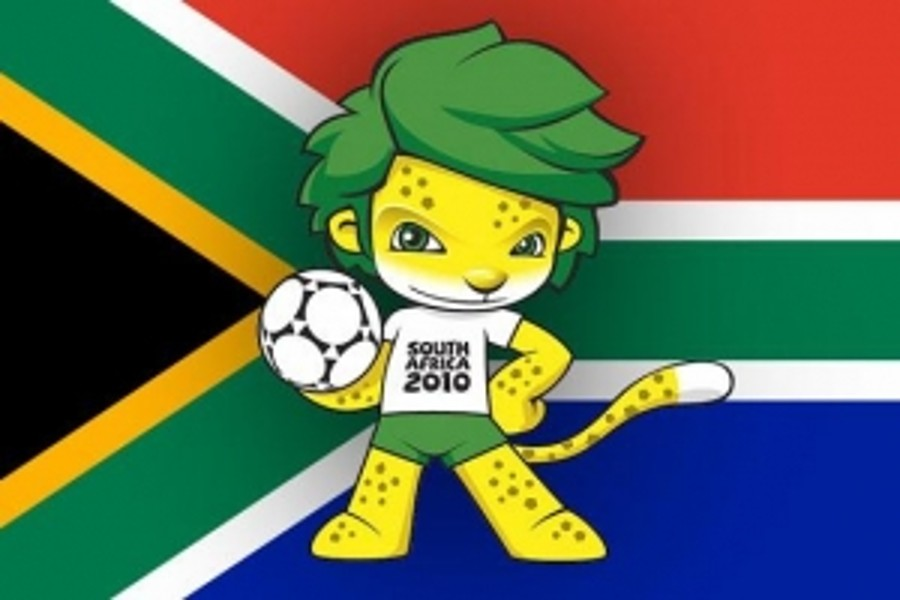

#5 Zabivaka

En el puesto #5 tenemos a la mascota del mundial 2018, Zabivaka es un lobo
con una camiseta blanca de mangas azules, y con pantalones cortos de color rojo, su ropa hace referencia
a la bandera de rusia, Su nombre en español significa "pequeño goleador". Su creadora se llama "Ekaterina Bocharova",
ella admitió que se inspiró en su perro llamado "Tyson" para crear a Zabivaka, lo diría con las siguientes palabras:
"Cuando supe del concurso, comprendí que se me presentaba la oportunidad excelente de hacer algo no sólo para mí misma, sino también
para el gran público. Decidí que un lobo sería perfecto como mascota. Me encantan los perros y tengo un terrier airedale que se llama
Tyson. Él me sirvió de inspiración"
El lobo obtuvo el 53% de los votos y bocharova recibió 500 dólares por el boceto, mucho menos que otras mascotas como fuleco
que fue comprado por 100 millones de dólares y footix por 30 millones de dólares.
Zabivaka es una mascota muy adorable y agradable, seguro que te cayó bien, ¿verdad?
#4 World Cup Willie

El puesto #4 es para World Cup Willie, Él fue la primer mascota que existió en una copa del mundo, Willie
es un león que va vestido con la camiseta de la bandera del Reino Unido con las palabras "World Cup" en el pecho,
Fue creado por "Reg Hoye" quien trabajaba en Walter Tuckwell & Associates, y como dato curioso su creador
dijo que sólo tardó 5 minutos en armar el boceto de lo que sería la primer mascota en una copa del mundo,
Richard Collie contaría la historia de cómo se creó a Willie:
"Nos dieron la tarea de crear una mascota que pudiera vender más allá de la insignia de la copa y eso fue
lo que nos dieron para empezar. Nos tomó 5 minutos decidir que sería mejor un león por encima de un
bulldog, y otros 5 minutos para que Reg lo dibujara"
Han hecho muchas cosas con la imagen de Willie, Hicieron tazas de té, peluches, camisetas, bolsos, máscaras, dulces, cigarrillos, etc.
Willie merece aparecer en este top, no sólo por ser la primer mascota en un mundial, fue un antes y un después en la historia de los mundiales,
la copa del mundo ya no era sólo un torneo a disputarse cada 4 años, ahora también eran 4 años para hacer una mascota que represente a todo un país.
#3 Fuleco

En el puesto #3 tenemos a la mascota del mundial 2014, Fuleco es un armadillo de la especie Tolypeutes tricinctus, su nombre
une las palabras Fútbol y Ecología, pretendieron no sólo hacer eco por la pasión del fútbol, sino también acerca de la
preocupación por el medio ambiente, si hablamos de su personalidad, Fuleco es muy bromista y entusiasta, sus hobbies
son escuchar música, jugar fútbol, y los videojuegos (Algunas curiosidades de fuleco es que sus ídolos son
pelé y ronaldinho, también fue la primer mascota en usar redes sociales).
Fuleco fue el nombre elegido con el 48% de los votos, superando a Zuzeco
que tenía el 31% de los votos, y a Amijubi con el 21% de los votos.
Fuleco ocupa el puesto #3 por su gran diseño, su caparazón está conformado por los hexágonos de la pelota, un detalle muy
inteligente, y también es una mascota linda y agradable para el público en general. ¿Quién no quiere un peluche de fuleco?
#2 Zakumi

El puesto #2 es para la mascota del mundial 2010, Zakumi es un leopardo africano antropomorfo con pelo verde, su creador
se llama "Andries Odendaal".El nombre de Zakumi tiene dos significados, "ZA" es el código ISO de Sudáfrica y "kumi" significa diez
en varias lenguas africanas. La fecha de nacimiento de Zakumi coincide con el Día Internacional del Niño Africano,
conocido en Sudáfrica como "Día de la juventud". al haber sido creado en 1994, forma parte de la generación libre sudafricana nacida en democracia,
ya que el año 1994 se considera el nacimiento de la democracia en Sudáfrica, Danny Jordaan, presidente de la Asociación Sudafricana de Fútbol
reconoció lo que significaba Zakumi con las siguientes palabras:
"Es un sudafricano orgulloso de serlo, y por lo tanto, el embajador ideal para la primera Copa del Mundo africana. Nació en 1994, compartiendo así
aniversario con la democracia de nuestro país. Es joven, lleno de energía, inteligente y ambicioso. Una auténtica inspiración para jóvenes y mayores
en nuestro país"
Los colores verdes y amarillos se asemejan a los colores de la selección de Sudáfrica aunque no tiene la camiseta de la selección como otras mascotas,
sólo viste unos pantalones cortos de color verde y una camiseta blanca que dice "South Africa 2010". Zakumi ocupa el puesto #2 por su buen diseño,
y también es una mascota que genera nostalgia a quienes vieron por primera vez el Mundial de Sudáfrica 2010, también es una mascota que da mucha
ternura... imposible olvidarse de ese mundial y de Zakumi :")
#1 Footix